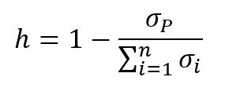
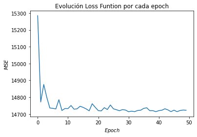

Introducción a la teoría de portafolios¶
Importar datos.¶
datos = read.csv("Cuatro acciones 2020.csv", sep = ";", dec = ",", header = T)
head(datos)
tail(datos)
| Fecha | ECO | PFAVAL | ISA | NUTRESA | |
|---|---|---|---|---|---|
| <fct> | <int> | <int> | <int> | <int> | |
| 1 | 26/03/2018 | 2775 | 1165 | 13080 | 25720 |
| 2 | 27/03/2018 | 2645 | 1155 | 13080 | 25700 |
| 3 | 28/03/2018 | 2615 | 1165 | 13320 | 25980 |
| 4 | 2/04/2018 | 2690 | 1165 | 13420 | 25920 |
| 5 | 3/04/2018 | 2730 | 1175 | 13660 | 25920 |
| 6 | 4/04/2018 | 2740 | 1190 | 13560 | 25840 |
| Fecha | ECO | PFAVAL | ISA | NUTRESA | |
|---|---|---|---|---|---|
| <fct> | <int> | <int> | <int> | <int> | |
| 495 | 3/04/2020 | 2270 | 906 | 15500 | 19700 |
| 496 | 6/04/2020 | 2260 | 955 | 16140 | 19720 |
| 497 | 7/04/2020 | 2230 | 932 | 16680 | 20020 |
| 498 | 8/04/2020 | 2360 | 936 | 17200 | 20700 |
| 499 | 13/04/2020 | 2250 | 951 | 17860 | 21300 |
| 500 | 14/04/2020 | 2220 | 955 | 18000 | 22500 |
Matriz de precios.¶
precios = datos[,-1]
precios = ts(precios)
Matriz de rendimientos.¶
rendimientos = diff(log(precios))
Coeficientes de correlación¶
correlacion = cor(rendimientos)
print(correlacion)
ECO PFAVAL ISA NUTRESA
ECO 1.0000000 0.6513161 0.1531317 0.3337626
PFAVAL 0.6513161 1.0000000 0.2308501 0.3305836
ISA 0.1531317 0.2308501 1.0000000 0.4572004
NUTRESA 0.3337626 0.3305836 0.4572004 1.0000000
Rendimientos esperado de cada acción.¶
rendimientos_esperados = apply(rendimientos, 2, mean)
print(rendimientos_esperados)
ECO PFAVAL ISA NUTRESA
-0.0004471815 -0.0003983267 0.0006398545 -0.0002680433
Volatilidad de cada acción.¶
volatilidades = apply(rendimientos, 2, sd)
print(volatilidades)
ECO PFAVAL ISA NUTRESA
0.03193244 0.02855772 0.02372920 0.01401047
Portafolio N° 1¶
proporciones = c(0.15, 0.10, 0.50, 0.25)
proporciones
- 0.15
- 0.1
- 0.5
- 0.25
sum(proporciones)
Rendimientos del portafolio de inversión N° 1¶
rendimientos_portafolio = vector()
for(i in 1:nrow(rendimientos)){
rendimientos_portafolio[i] = sum(rendimientos[i,]*proporciones)
}
Rendimiento esperado del portafolio de inversión N° 1¶
rendimiento_esperado_portafolio = mean(rendimientos_portafolio)
rendimiento_esperado_portafolio
Volatilidad del portafolio de inversión portafolio N° 1¶
volatilidad_portafolio = sd(rendimientos_portafolio)
volatilidad_portafolio
Indicador de diversificación¶

3¶
h = 1 - volatilidad_portafolio/sum(volatilidades)
h
Gráfico de las acciones riesgo-rendimiento portafolio N° 1¶
plot(volatilidades, rendimientos_esperados, xlab = " Volatilidad", ylab = "Rendimiento esperado", col = c(1:4), pch = 19, cex = 2)
points(volatilidad_portafolio, rendimiento_esperado_portafolio, pch = 17, cex = 2)
legend("topleft", c(nombres, "Portafolio N°1"), pch = c(rep(19,4), 17), col = c(1:4), bty = "n")

Rendimientos del portafolio de inversión N° 2¶
proporciones = c(0.25, 0.20, 0.45, 0.10)
proporciones
- 0.25
- 0.2
- 0.45
- 0.1
sum(proporciones)
Rendimientos del portafolio de inversión N° 2¶
rendimientos_portafolio = vector()
for(i in 1:nrow(rendimientos)){
rendimientos_portafolio[i] = sum(rendimientos[i,]*proporciones)
}
Rendimiento esperado del portafolio de inversión N° 2¶
rendimiento_esperado_portafolio = mean(rendimientos_portafolio)
rendimiento_esperado_portafolio
Volatilidad del portafolio de inversión portafolio N° 2¶
volatilidad_portafolio = sd(rendimientos_portafolio)
volatilidad_portafolio
Indicador de diversificación¶
h = 1 - volatilidad_portafolio/sum(volatilidades)
h
Gráfico de las acciones riesgo-rendimiento portafolio N° 2¶
plot(volatilidades, rendimientos_esperados, xlab = " Volatilidad", ylab = "Rendimiento esperado", col = c(1:4), pch = 19, cex = 2)
points(volatilidad_portafolio, rendimiento_esperado_portafolio, pch = 17, cex = 2)
legend("topleft", c(nombres, "Portafolio N°1"), pch = c(rep(19,4), 17), col = c(1:4), bty = "n")
{kind=link}
